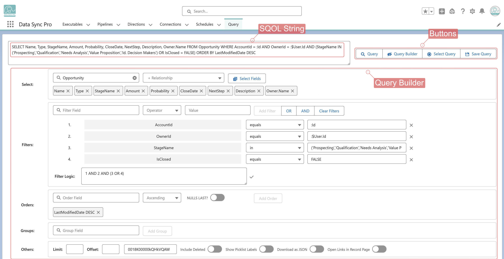

Query Manager is a Lightning Web Component that combines a guided Query Builder, query decomposition, and query management with powerful data manipulation tools — letting architects, admins, developers, and business users build, understand, and act on Salesforce data without writing SOQL by hand. Lightning App Builder-ready, it can be embedded directly into pages to deliver advanced data lists and streamline business operations.
Key Capabilities:
Query Builder: Guided interface with smart autocomplete to simplify SOQL creation.
Advanced Data Interaction: Inline editing, mass update/delete, record creation, cloning, pagination, column fitlers, and export—all from query results.
Query Decomposer: Breaks down raw SOQL into UI components for easier understanding and adjustments.
Dynamic Filters: Apply user- and record-based filters for context-aware views.
Reusable Queries: Save and organize queries for quick access to frequently used queries.
Unified Cross-Org Access: Query data seamlessly across any connected Salesforce orgs.
Lightning Integration: Can be integrated with Lightning App Builder for advanced queries and Actionable Data Lists (Executables).
